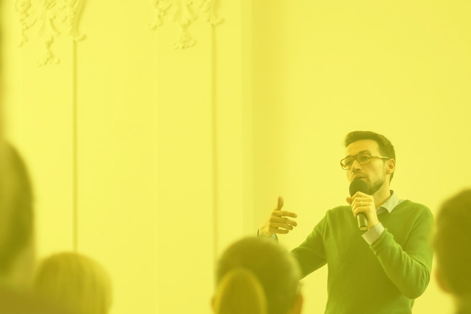

-


INSPIRATIVNÍ RÁNA
začni svůj den plný nápadů a idejí
Inspirativní rána
Vyslechnete si inspirativní přednášky u kávy a občerstvení a začnite svůj den plný nápadů a idejí!
Co jsou Inspirativní rána?
Inspirativní rána znamenají setkávání s osobnostmi, které mají co říct. Jde o mladý brněnský projekt, jehož cílem je vytvářet příjemné prostředí pro rozšiřování obzorů a navazování nových kontaktů. Vstupné je dobrovolné a navíc vám vždy nabídneme i malé občerstvení. Začněte svůj den jinak!
Jak probíhá klasické Inspirativní ráno?
My jsme na místě (v Místodržitelském paláci Moravské galerie v Brně) již kolem sedmé hodiny ranní a vše pro vás připravujeme. Zpravidla v osm hodin přichází náš host (tedy aktuální přednášející), aby si přichystal vše potřebné. Nejdůležitější aktéry (tedy vás, návštěvníky) vpouštíme do sálu po čtvrt na devět. V tuto chvíli máte prostor dát si kávu nebo něco na zub a poklábosit mezi sebou. Po půl deváté začíná přednáška, která trvá maximálně půl hodiny, a pak následuje případná podobně dlouhá diskuze. Celkově se tak pohodlně vejdeme do devadesáti minut, a vy tak můžete směle vykročit vstříc svému studijnímu či pracovnímu dni ještě před desátou hodinou! A perfektně naladění :-)
Jak často se akce konají?
Inspirativní rána se v tomto školním roce (2014/15) budou konat jednou měsíčně, vždy spíše v druhé polovině měsíce. Kromě toho se ještě rýsují speciální akce nad rámec klasický rán, a to pod hlavičkou InspiRána Special Event. Jednu takovou jste mohli navštívit již na konci předchozí sezony (Promítání absolventských filmů studentů UTB ze Zlína), a že se vás tam sešlo hodně!
Jak se to vůbec stalo, že tu dnes máme Inspirativní rána?
Naše rána fungují už něco málo přes rok. Nejdříve tu byl Matúš Labanc, který započal naše dějiny vytvořením svého producentského záměru v rámci dokončování studia Divadelního managementu na Divadelní fakultě JAMU v Brně (producentský záměr je jednou ze tří závěrečných prací, vedle diplomové práce a dokumentace absolventského výkonu). Matúš se rozhodl, že když už má něco vymýšlet a psát, tak proč to rovnou i nezrealizovat, a přizval k sobě pár studentek stejného oboru. Proběhl pilotní projekt tří rán, tenkrát ještě pod starým názvem Kreativní rána, který ověřil funkčnost konceptu. To bylo před letními prázdninami roku 2013. Po prázdninách se nám podařilo získat grant od Nadace Vodafone Česká Republika, díky kterému již nic nebránilo začít novou sezonu, kdy se po celý školní rok konala Inspirativní rána zpravidla dvakrát do měsíce. Na základě partnerství s Moravskou galerií v Brně se domovským prostorem projektu stal Místodržitelský palác na Moravském náměstí. Občerstvení bylo celou dobu zajišťováno ve spolupráci s prodejnou Sklizeno a internetovým obchodem Čerstvá káva. Druhou sezonu začínáme koncem září a tentokrát zatím žádnou finanční podporou nedisponujeme. Přesto máme s Inspirativními rány spoustu plánů a už se na vás na všechny moc těšíme!
Přidejte se k nám